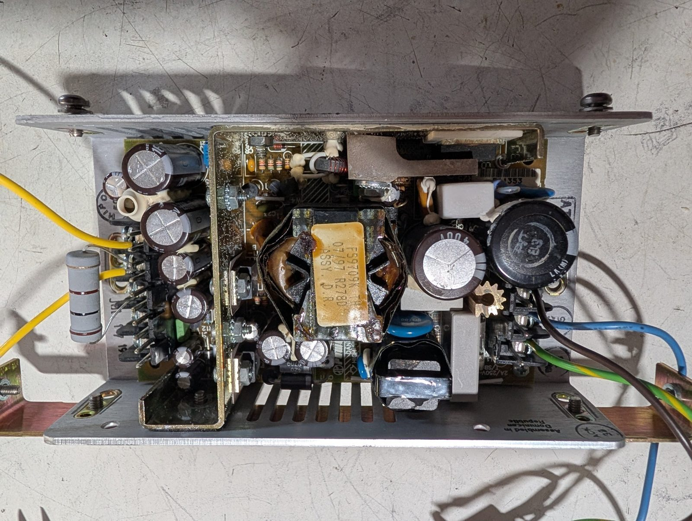

The HP 58503A's original power supply (serial 3710A01056), out of the receiver. It hiccups at startup; the receiver has run on a replacement of the same model since 2026-10-01. See bench.md, "Power supplies".

From Bel's MAP55 data sheet, BCD.00564_H (2024), for the MAP55-4003G7 that succeeds it.
| Output | Rated | Peak | Setting |
|---|---|---|---|
| +5 V, adj. 4.7–5.6 V | 6 A | 8 A | 5.0–5.2 V |
| +15 V | 2.5 A | 3.5 A | 14.6–15.4 V |
| −5 V | 0.5 A | 1 A | −4.8 to −5.2 V |
| −15 V | 0.5 A | 1 A | −14.4 to −15.6 V |
55 W continuous; 90–132 or 175–264 V AC in.
0.50 A on the main channel, +5 V: "all multiple output models, main channel only". Its regulation figures are for loads from 20% to 100%.
Tested out of the receiver, the supply needs at least 0.50 A drawn from +5 V: 10 Ω or less.
Everything right of the transformer is mains-referenced. Probe it through an isolation transformer or with a differential probe. Discharge the 400 V capacitors, 3 and 4, before touching the primary.